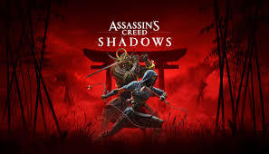

Assassin's creed shadows takes place in the 16th century in feudal japan towards the end of the Sengoku period, the game will focus on the millennia-old struggle between the Assassin Brotherhood, who fight for peace and liberty, and the Templar Order, who desire peace through control, from the perspective of two protagonists: Fujibayashi Naoe, a female shinobi and Yasuke and african samurai. Yasuke will be the heavy-hitter as a samurai, while Naoe is our more classic AC-style assassin.
The game will explore central Japan, including regions like Kyoto, Kobe, Osaka, and the Iga province, with historically accurate castles such as Takeda and Fukuchiyama, along with detailed historical landmarks and strongholds designed as intricate dungeons. The game will reflect the urbanization of Japan at the time, as well as the influence of Portuguese traders and Jesuit missionaries, who introduced Christianity and imported technologies like cannons and long guns.
The Assassin's Creed Shadows release date is set for March 20, 2025. Originally, the game was set to come out on November 15, 2024, before its initial February 14th delay, and now, a second delay has made it into March territory.
You'll get to play as both Yasuke and Naoe and experience a new direction of AC gameplay as you switch between the two. Both characters have unique playstyles, and when combined, you get to experience both heavy attack-style combat opportunities through Yasuke's samurai gameplay and more stealth focused when operating as Naoe. You'll get to swap between the characters to explore the world and engage in missions.